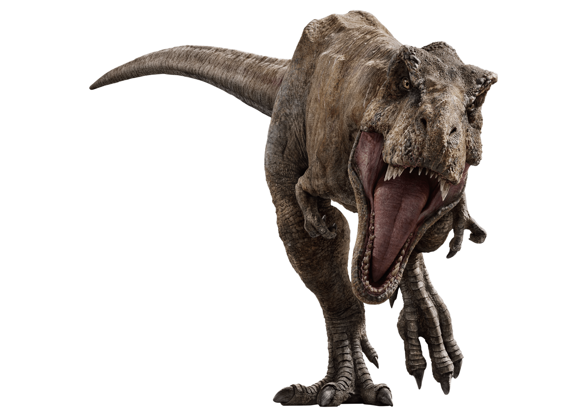

What are about T-Rex
Tyrannosaurus rex was one of the largest and most fearsome carnivores of all time. Although Tyrannosaurus rex is one of the most renowned dinosaurs, few of the fossil specimens recovered by paleontologists are complete.
The Tyrannosaurus rex was a bipedal dinosaur. This means that it walked and ran on two legs. These two legs were large and strong to carry the immense weight of the dinosaur. In contrast, the arms of the T-rex were relatively small. Although, it is thought that the small arms were very strong in order hold onto prey
The T-rex ate meat from other animals and dinosaurs, however, there is much debate over whether the Tyrannosaurus Rex was a predator (hunted and killed it's own food) or whether it was a scavenger
There are numerous significant specimens of the Tyrannosaurus in museums throughout the world. One of the largest and most complete is "Sue" at the Field Museum of Natural History in Chicago. Another major T-Rex specimen is "Stan" at Black Hills Museum of Natural History Exhibit in Hill City, South Dakota. Also, paleontologist Barnum Brown's largest Tyrannosaurus find (he found 5 in all) can be seen at the American Museum of Natural History in New York.
Facts about T-Rex
The Tyrannosaurus had a life span of around 30 years.
Tyrannosaurus is from the Greek word meaning Tyrant Lizard
The dinosaur has many similar features to birds. One thought is that they were warm-blooded like birds, rather than cold-blooded like reptiles.
Its arms were too short to reach its mouth.
It lived in North America in river valleys and forests.
It could probably eat as much as 500 pounds of meat in a single bite.
The Chicago museum purchased the famous Tyrannosaurus Sue fossil for $8 million.
Their babies may have been covered in feathers.